01 · Lúdico01 · Playful
01 · Lúdico01 · PlayfulInicioHomeTu progreso primero: «Estás más cerca de lo que crees».Your progress first: "You're closer than you think."
Sep 2024 – Actualidad · En producción. Optimización de la conversión del canal directo: motor de reservas y home recompuesta.
Sep 2024 – Present · In production. Direct-channel conversion optimisation: booking engine and recomposed homepage.
Jun–Sep 2024 · Rev. 2026. Auditoría de 47 componentes, 17 construidos y criterios WCAG 2.1 AA en los flujos evaluados.
Jun–Sep 2024 · Rev. 2026. 47 components audited, 17 built, and WCAG 2.1 AA criteria applied to the audited flows.
2022–2024 · Rev. 2026. Propuesta Build vs. Buy, no implementada: 56,5 h/mes de trabajo manual medidas.
2022–2024 · Rev. 2026. Build vs. Buy proposal, not implemented: 56.5 h/month of manual work measured.
Bootcamp 2024 · Rev. 2026. UX research en un equipo de 8: 12 entrevistas sobre por qué los socios abandonan.
Bootcamp 2024 · Rev. 2026. UX research in a team of 8: 12 interviews on why members drop out.
2020–2022 · Rev. 2026. Marca, carta QR y web de pedidos propia: +28% en pedidos directos online.
2020–2022 · Rev. 2026. Brand, QR menu and in-house ordering site: +28% direct online orders.
La fricción no estaba en reservar una clase; estaba en volver al día siguiente.The friction wasn't in booking a class; it was in coming back the next day.
En dos semanas se sentían perdidos: sin nadie con quien ir y sin forma de ver su progreso.Within two weeks they felt lost: no one to train with and no way to see their progress.
La hipótesis que se cayóThe hypothesis that fell apartUna cuota mensual solo es negocio si el socio sigue en el mes 2. Por eso medimos el journey por etapas del ciclo de vida, y la que manda es pasar del día 45.A monthly fee only pays off if the member is still around in month 2. So we measured the journey by lifecycle stage, and the one that counts is getting past day 45.
“Si sé que alguien me espera en la clase, voy.”“If I know someone’s expecting me in class, I go.”
“Si mi grupo falla, yo acabo fallando.”“If my group skips, I end up skipping.”
El 68% de abandono antes del día 45 es un dato de contexto, no medido por el equipo. Es un prototipo: estos son los KPIs que propusimos seguir, no resultados medidos.The 68% drop-off before day 45 is context data, not measured by the team. This is a prototype: these are the KPIs we proposed to track, not measured results.
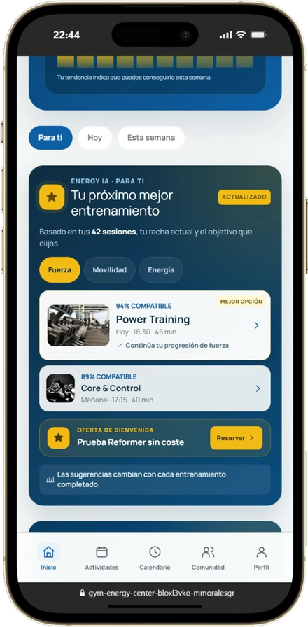
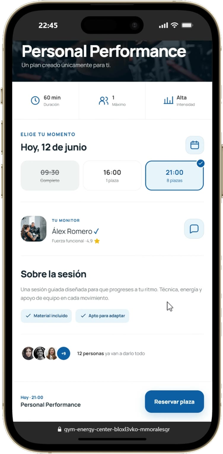
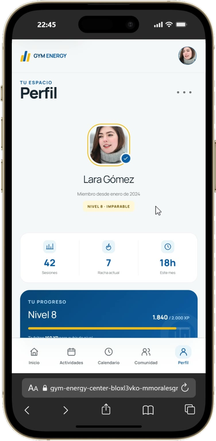
Ideas agrupadas por los 3 hallazgos de las 12 entrevistas.Ideas grouped by the 3 findings from the 12 interviews.
Cada sección responde a un hallazgo: práctico, social o lúdico. El progreso va primero en la home.Each section answers a finding: practical, social or playful. Progress comes first on the home.
Artefactos originales de 2024: el flujo de actividades y los wireframes del pilar social.Original 2024 artefacts: the activities flow and the social pillar wireframes.
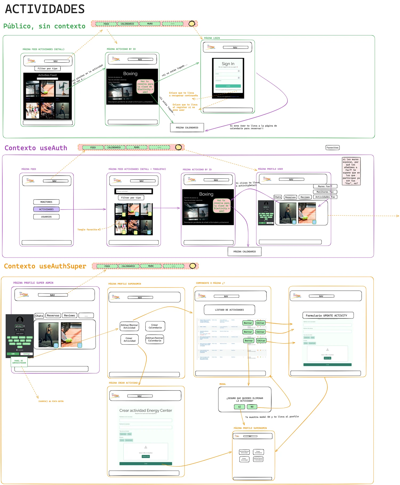


Pulsa en cada boceto para verlo a tamaño completo.Tap any sketch to see it full size.
La misma lógica en móvil y escritorio: reservar, ver quién va y seguir tu racha.The same logic on mobile and desktop: book, see who's going, track your streak.
01 · Lúdico01 · Playful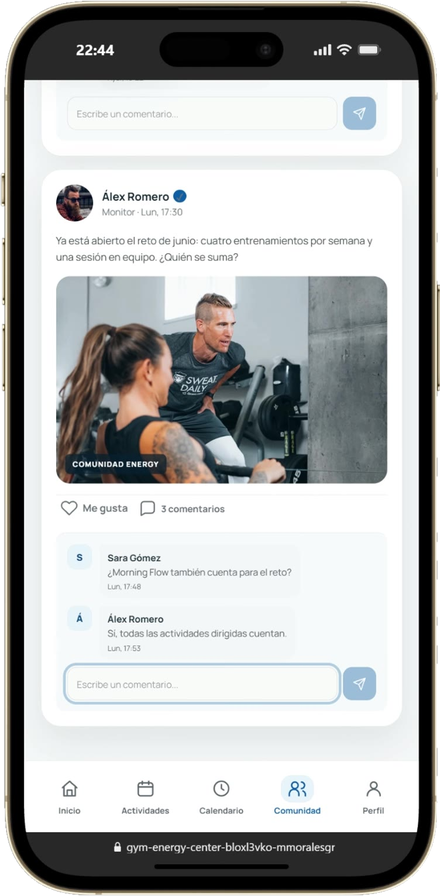
02 · Social02 · Social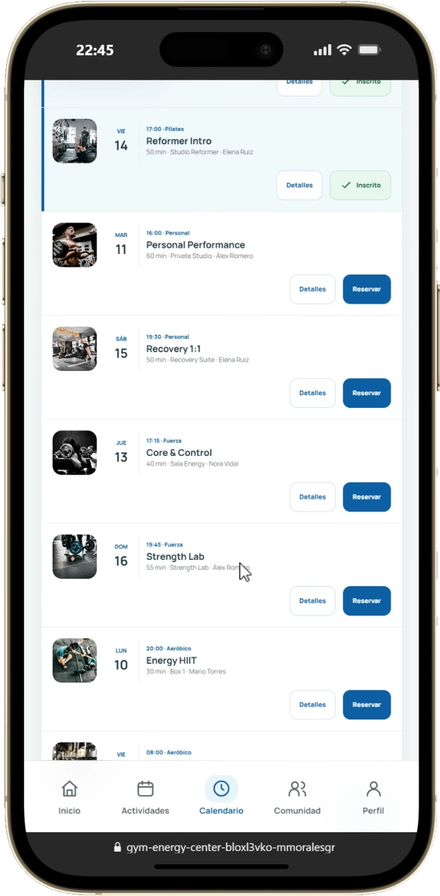
03 · Práctico03 · Practical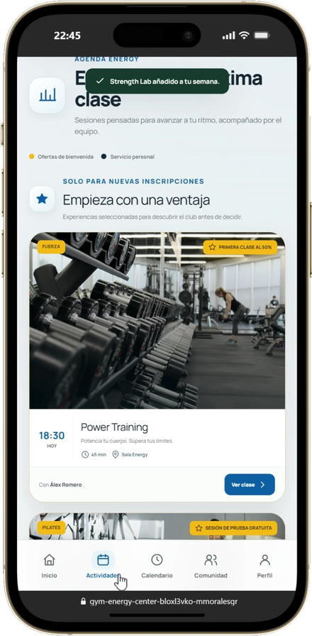
04 · Práctico04 · Practical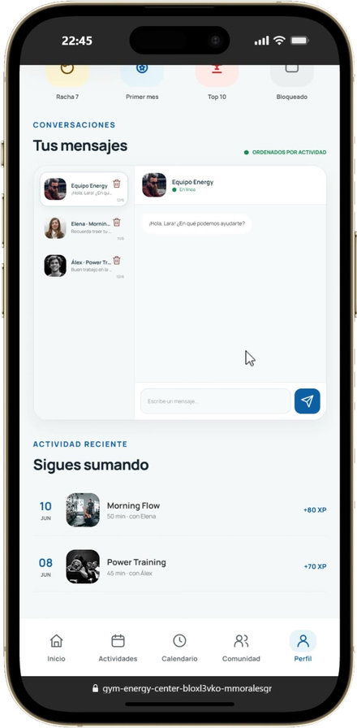
06 · Social06 · Social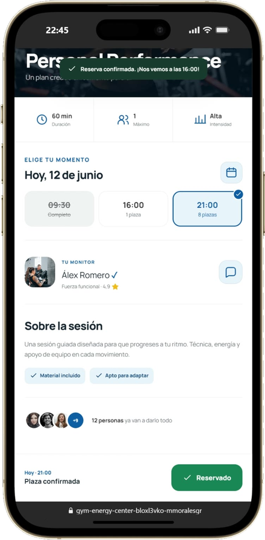
El diseño se apoya en 12 entrevistas en profundidad hechas en un equipo de 8. No hubo un test de usabilidad con métricas, así que no publico tasas de éxito ni de satisfacción.The design is grounded in 12 in-depth interviews run by a team of 8. There was no usability test with metrics, so I don't publish success or satisfaction rates.
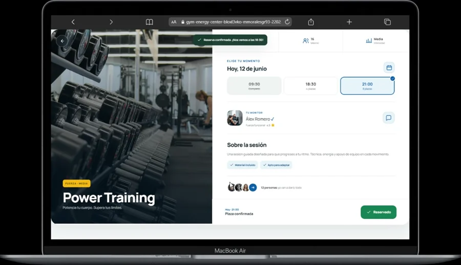
Abrir prototipoOpen prototype ↗La fricción no estaba en reservar una clase; estaba en volver al día siguiente.The friction wasn't in booking a class; it was in coming back the next day.
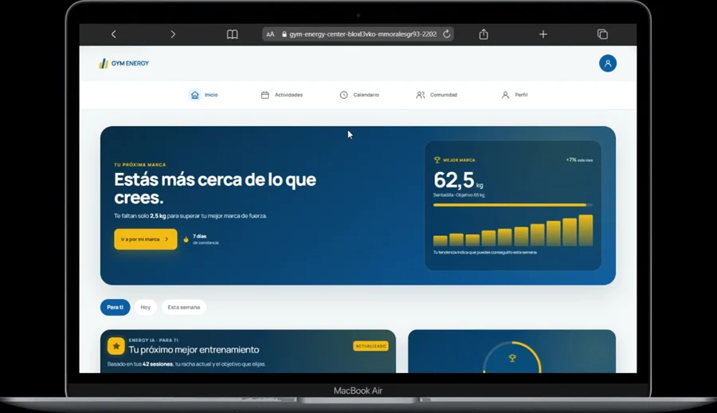
de los socios nuevos abandona antes del día 45.of new members drop out before day 45.
Diseñar la app alrededor del grupo y la racha, no del calendario.Design the app around the group and the streak, not the calendar.
para reservar una clase, con el grupo visible junto al botón.to book a class, with the group shown next to the button.
En dos semanas se sentían perdidos: sin nadie con quien ir y sin forma de ver su progreso.Within two weeks they felt lost: no one to train with and no way to see their progress.
Entramos pensando en más horarios y más clases. Las entrevistas apuntaron a otro sitio.We went in thinking more timeslots, more classes. The interviews pointed elsewhere.
No saber usar el equipo frena más que no tener tiempo.Not knowing the equipment holds people back more than lack of time.
Saber que un amigo va a la clase hace que vayas.Knowing a friend is attending makes you go too.
Ver la racha refuerza el compromiso de volver.Seeing the streak reinforces the commitment to return.
Una cuota mensual solo es negocio si el socio sigue en el mes 2. Por eso medimos el journey por etapas del ciclo de vida, y la que manda es pasar del día 45.A monthly fee only pays off if the member is still around in month 2. So we measured the journey by lifecycle stage, and the one that counts is getting past day 45.
“Si sé que alguien me espera en la clase, voy.”“If I know someone’s expecting me in class, I go.”Persona ilustrativa · basada en 12 entrevistas · Ilustración generada con IAIllustrative persona · based on 12 interviews · AI-generated illustration
“Si mi grupo falla, yo acabo fallando.”“If my group skips, I end up skipping.”Persona ilustrativa · basada en 12 entrevistas · Ilustración generada con IAIllustrative persona · based on 12 interviews · AI-generated illustration
El 68% de abandono antes del día 45 es un dato de contexto, no medido por el equipo. Es un prototipo: estos son los KPIs que propusimos seguir, no resultados medidos.The 68% drop-off before day 45 is context data, not measured by the team. This is a prototype: these are the KPIs we proposed to track, not measured results.
«Tu próximo mejor entrenamiento», sugerido según tus sesiones y tu racha."Your next best workout", suggested from your sessions and streak.
«12 personas ya van a darlo todo», junto al botón de reservar."12 people are already going all in", next to the booking button.
Racha de 7 días y nivel 8, lo primero que ves en tu perfil.7-day streak and level 8, the first thing you see on your profile.
Ideas agrupadas por los 3 hallazgos de las 12 entrevistas.Ideas grouped by the 3 findings from the 12 interviews.
Cada sección responde a un hallazgo: práctico, social o lúdico. El progreso va primero en la home.Each section answers a finding: practical, social or playful. Progress comes first on the home.
Artefactos originales de 2024: el flujo de actividades y los wireframes del pilar social.Original 2024 artefacts: the activities flow and the social pillar wireframes.
Pulsa en cada boceto para verlo a tamaño completo.Tap any sketch to see it full size.
La misma lógica en móvil y escritorio: reservar, ver quién va y seguir tu racha.The same logic on mobile and desktop: book, see who's going, track your streak.
01 · Lúdico01 · PlayfulTu progreso primero.Your progress first.
Ver quién entrena y comentar.See who's training and comment.
Sesiones del día y reserva directa.Today's sessions and direct booking.
Confirmación al instante.Instant confirmation.
La micro-victoria a la vista.The micro-victory in plain sight.
Logros y chats con tu grupo.Achievements and chats with your group.
El diseño se apoya en 12 entrevistas en profundidad hechas en un equipo de 8. No hubo un test de usabilidad con métricas, así que no publico tasas de éxito ni de satisfacción.The design is grounded in 12 in-depth interviews run by a team of 8. There was no usability test with metrics, so I don't publish success or satisfaction rates.
para reservar una claseto book a class
entrevistas en profundidadin-depth interviews
personas en el equipopeople on the team
El insight de la vergüenza no salía en ningún brief.The intimidation insight wasn't in any brief.
La evidencia de usuario alinea a un equipo de 8 mejor que las opiniones.User evidence aligns a team of 8 better than opinions.
Sus reacciones tumbaron nuestras primeras hipótesis.Their reactions tore down our first hypotheses.
Prueba el flujo completo en desktop o móvil: explorar clases, reservar plaza en dos toques y comprobar el bucle de hábitos. Try the full flow on desktop or mobile: browse classes, book a spot in two taps and track the habit loop.
La fricción no estaba en reservar una clase; estaba en volver al día siguiente. Cómo replanteamos una herramienta administrativa como una experiencia social pensada para fomentar el hábito deportivo. The real barrier wasn't class booking; it was returning the next day. How we turned an administrative tool into a community-driven experience that builds habits.
Los socios novatos se sentían perdidos y desmotivados tras las dos primeras semanas sin acompañamiento ni conexión con compañeros.New members felt lost and disengaged within two weeks without social support or progress tracking.
Reserva en un toque, muro de actividades y retos compartidos para transformar el entrenamiento en un hábito grupal.One-tap booking, community activity wall and shared challenges turning solo workouts into social habits.
Entrevistas en profundidad que guiaron el diseño, en un equipo de 8.In-depth interviews that shaped the design, in a team of 8.
El miedo a no saber usar las máquinas frena la asistencia más que la falta de tiempo.Intimidation over equipment and routines hinders attendance far more than lack of time.
Saber que un conocido va a la misma clase anima a ir.Knowing an acquaintance attends the same session doubles turnout probability.
Visualizar la racha de entrenamientos semanales refuerza el compromiso continuo.Tracking weekly attendance streaks visually solidifies psychological commitment.
Socios que abandonaban el centro antes del día 45 por falta de adherenciaMembers dropping out before day 45 due to lack of fitness habit
Falta de motivación y sensación de soledad en el entrenamiento libreLack of motivation and isolation during solo gym workouts
Fricción para reservar y descubrir clases colectivas adaptadas a su nivelFriction discovering and booking group classes suited to member level
Ausencia de feedback visual sobre el progreso o rachas semanalesZero visual feedback on weekly consistency and milestone progress
El usuario no dejaba de ir al gimnasio por pereza, sino por falta de recompensa social.Users didn't quit out of laziness, but from absence of social reward and habit triggers.
Rediseñar la app centrada en dinámicas de compromiso social y reserva en 2 taps.Redesign mobile experience around habit-forming social dynamics & 2-tap bookings.
«Tu próximo mejor entrenamiento», sugerido según tus sesiones y tu racha."Your next best workout", suggested from your sessions and streak.
«12 personas ya van a darlo todo», junto al botón de reservar."12 people are already going all in", next to the booking button.
Racha de 7 días y nivel 8, lo primero que ves en tu perfil.7-day streak and level 8, the first thing you see on your profile.
Franja horaria seleccionada, viendo quién más va. Timeslot selected, seeing who else is going.
Del hueco libre a la plaza confirmada en 2 taps. From open slot to confirmed spot in 2 taps.
Bucle de hábito: recordatorio contextual + reserva en 2 toques + logro visualHabit loop: contextual nudge + 2-tap booking + visual milestone
Entrevistas que guiaron la arquitecturaDiscovery user interviews
Para reservar una clase en el prototipoTo book a class in the prototype
El diseño de comportamiento pesa más que el aspecto puramente visualBehavioral psychology matters far more than purely decorative UI styling
La investigación cualitativa destapa los bloqueos emocionales reales del usuarioQualitative user research reveals the true emotional barriers to adoption
En las entrevistas, el grupo apareció como un motivo clave para volverIn interviews, the group came up as a key reason to come back
Si no hubiéramos hecho entrevistas, habríamos diseñado otro calendario genérico sin resolver el problema de fondo.Without discovery interviews, we would have built another cold calendar without solving churn.
Alinear visiones divergentes mediante datos de usuario fue la lección más valiosa del bootcamp.Resolving team disagreements by leaning on user evidence was my key takeaway.
Nuestras suposiciones iniciales cambiaron radicalmente al ver a los usuarios interactuar con el prototipo.Our early assumptions shifted completely once we put interactive prototypes in front of testers.
De la investigación cualitativa inicial al diseño que mueve métricas de negocio y a los sistemas a escala.From early qualitative research to design that moves business metrics and to systems at scale.